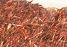

Les
rouges et les roses
English version

[Lectures conseillées :
Le
rouge dans la langue française, Pourpre.com
La
couleur
rouge, Pourpre.com]
Le rouge, bien
que peu
énergétique, serait selon
certains la couleur la plus rapidement aperçue, même à distance. On la
retrouve un peu partout à travers le monde dans les célébrations
maritales, les fiançailles, les saturnales, les lieux de plaisirs
orientaux ou occidentaux, etc. C'est la couleur de Bacchus et de Dionysos.
Même du point de vue linguistique, le rouge n'est pas dépourvu d'intérêt :
il donne royro
au Japon, holi en inde, rouge ou rouille en France et sans doute de
très nombreux autres termes phonétiquement proches de par le monde.
Mentionnons aussi
l'association du rouge aux
menstruations. L'occasion, pour certains peuples, de révérer au
travers de cette couleur la féminité, et pour quelques autres, de
signaler, par le port obligatoire sur le visage de la couleur rouge, un
état prétendu impur, avertissant du même coup les autres
civilisations humaines de leur propre obscurantisme.
On relève cependant, heureusement, un
usage traditionnel du rouge globalement protecteur et
propiciatoire au combat comme en amour, repoussant même parfois les esprits mauvais,
soulignant un grade politique ou un pouvoir et
protégeant le bétail - sans compter les vertus curatives supposées de
l'hématite et du sang-dragon
censées lutter contre la
rougeole et telle ou telle autre inflammation -, dans de nombreuses
traditions du monde entier. Ces traditions, faisant souvent
référence à l'ocre rouge, pourraient
être tellement anciennes qu'elles se confondraient historiquement avec la naissance de
l'acte de peindre.
|
Sommaire
Couleurs
évoquées sur d'autres pages
Les rouges
azoïques
Le rouge hélios
Le rouge
vermillon de Chine
Le rouge de
carthame
Le rouge
d'Andrinople
Les
couleurs écarlates
Le grenat
Les
thio-indigos
Le henné
Le rose
Pour
mémoire...
L'arséniate
de cobalt
Le
réalgar
Le
rose ou rosette ancien (rouge brésil, braziline)
Le rocou ou roucou (glossaire)
Le rouge de molybdène (courrier des lecteurs)
Les
rouges d'utilisation locale
A voir aussi |
Couleurs
évoquées sur d'autres pages :
Lecture conseillée :
Le
rouge sur Pourpre.com
Garance, alizarine, carmin, kermès et cramoisis : voir laques
et laques anciennes.
Vermillon et cinabre : article
séparé.
Minium : article
séparé.
Rouges de cadmium : article séparé.
Terres rouges (rouge de Pouzzoles, rouge Van Dyck,
etc.) : article
séparé.
Sanguine :
article séparé.
Les rouges azoïques
Voir Famille
des pigments azoïques
Ils sont généralement superbes, éclatants, lumineux et d'une
permanence très correcte. Fort colorants,
ils sont peu couvrants.
De très nombreuses imitations de pigments devenus rares ou considérés
comme dangereux sont azoïques.
Le rouge Hélios
Sa base est la toluidine éventuellement
mêlée de xylidine (azoïque).
Il est très colorant, intense et lumineux mais moyennement permanent.
Le rouge vermillon de Chine
Imitations fabriquée aujourd'hui avec la même base que le rouge
hélios, il est nettement plus
rose que rouge. Pour plus de détails, lire passage in vermillons.
Le rouge ou rose de carthame

Il est bien dérivé de la même plante (famille des synanthérées)
que l'huile du même nom - Nord-américaine - mais pas exactement de la même
variété. Les variétés orientales sont réputées - ce pigment
serait très utilisé dans les peintures chinoises - mais les acclimatations
alsaciennes et provençales n'ont pas mauvaise presse.
Cette plante sert également de colorant alimentaire.
A dire vrai, nous
manquons d'informations plus précises concernant la couleur pigmentaire que l'on
en tire. Merci
de nous apporter tout témoignage concernant ce produit, sa fabrication, son
utilisation, sa conservation.
Voir Safran.

Le rouge d'Andrinople
Andrinople, aujourd'hui Edirne, est située en Thrace (Grèce).
Chromate de plomb + oxyde de plomb, vous avez deviné : le rouge d'Andrinople
est un pigment
toxique en voie avancée d'élimination. Sa composition actuelle est exactement la même
que la version en cours du défunt jaune de chrome orangé. En fait, le terme de "rouge"
d'Andrinople correspond à une ancienne lacune linguistique. Aujourd'hui, il
serait plutôt classé parmi les orangés.
Il contenait de l'éosine (comme le jaune de
chrome précité).
Son procédé de fabrication - un peu spécial - était un secret commercial
majeur qui fut percé au cours du Moyen-âge. Graisses rances, huile, urine et
excréments, sangs animaux : la fabrication était particulièrement infecte !
Et... cette couleur servait en premier lieu à la teinture.
Lecture conseillée :
Le
rouge d'Andrinople sur Pourpre.com
Les couleurs écarlates
Le terme d'écarlate (scarlet en anglais, peut-être du persan saqirlat,
étoffe) est quelquefois apposé à un intitulé courant de type
"rouge de cadmium". Il s'agit parfois d'une modification obtenue par
simple jaunissement de la couleur originelle (ex.: ajout d'un PY83, d'un azo).
L'étymologie du mot dénote un voyage linguistique considérable
durant lequel le sens originel - qui ,dit-on, désignait un bleu - a pu s'altérer
quelque peu. Aujourd'hui on compte grosso modo parmi les couleurs "écarlates"
le vermillon, certains rouges de cadmium clairs et les rouges japonais clairs,
tendant tous vers l'orangé. Plus globalement, il s'agit des couleurs rouges les plus éclatantes.
On mentionne en teinturerie l'écarlate des Gobelins et celui de Venise,
peut-être plus froids que ceux que nous reconnaissons aujourd'hui sous cette
appellation.
Lecture conseillée :
L'écarlate sur Pourpre.com
Le grenat
C'est une pierre, une ou plusieurs couleurs mais pas réellement un pigment.
Pourtant, les Romains fabriquaient un usta qui était censé l'imiter,
ou imiter la pourpre. Lire l'article grenat du glossaire.
D'ailleurs le terme "rouge grenat" est il valable ? S'agit-il d'un rouge ? Théoriquement seulement car il existe des
grenats noirs et les fabricants de peintures proposent des "rouges
grenats" fortement violacés !
Voir laque de grenat.
Les thio-indigos
Pour des raisons étymologiques, ils sont traités dans l'article
consacré aux
bleus froids, dans la suite des sections indigo, indican et indanthrène.
Cliquer ici.
Le henné
C'est avant tout un grand arbuste (Lawsonia inermis, famille des
Lythrariacées) croissant en Inde, au Moyen-Orient et au Maghreb. La substance
colorante est extraite des feuilles, simplement séchées puis réduites en
poudre fine avant d'être mêlées à l'eau légèrement acide (citron) et
bouillies pas plus d'une heure.
Il a une grande affinité avec la peau humaine (mais aussi les ongles et les
cheveux) : non seulement il la colore très facilement, mais il aurait même des
vertus cicatrisantes (information non confirmée) et fongicides (pas de
confirmation non plus). Utilisé quelquefois pour teinter une peau trop blanche
(celle de Fatima, fille du Prophète sAaws, selon la tradition religieuse, celle des
nouveaux-nés selon certaines traditions coutumières), il est pourvu pour certains peuples
musulmans de vertus divines, quoique non certifiées par le Coran. Il est ainsi,
traditionnellement, censé protéger des esprits en des circonstances très
diverses. Il est souvent appliqué sur les paumes, la plante des pieds, les
ongles et les lèvres.
Il peut être utilisé en lavis mais sans garantie de permanence.
Sa couleur, bien connue, est d'un rouge brun, devenant nettement jaune lorsqu'il est
dilué.
Le rose
[Lectures conseillées :
Le
rose dans la langue française, Pourpre.com
La
couleur
rose, Pourpre.com]
Le rose... une couleur si difficile à définir tant elle est délicate,
comme la fleur dont elle a pris le nom. Elle tend si facilement vers le kitsch,
elle est si ardue à manipuler !
On peut distinguer (plus ou moins) deux types de rose :
* Le plus "vulgaire" (généralement),
qui est un rouge rehaussé de
blanc. C'est le cas des couleurs très abusivement nommées "teintes chairs" et
"ocres de chair" par les fabricants (voir
Les carnations). Ce genre de mélanges binaires (il s'agit
de Sienne brûlée et de blanc de zinc ou de titane) est reconnaissable à des
kilomètres. Relativement peu commodes pour l'utilisation en glacis car très couvrants, ils sont...
bien souvent à fuir
en courant.
Les roses plus complexes, plus rompus, comme par exemple les "vieux roses",
partent de deux couleurs ou plus et un
blanc. Ils peuvent être très adaptés à des emplois abstraits ou figuratifs, mais
plus difficilement et plus localement au portrait, spécifiquement, à moins
d'être mêlés, juxtaposés intimement, encore et toujours.
* Ceux qui naissent d'un rouge très transparent appliqué
en glacis sur fond clair, ont une force, une puissante intensité. Bien que
le résultat chromatique puisse être touchant, là aussi, rompre le ton (le
rouge ou la couleur de fond) est souvent indispensable.
Le rose est associé à l'érotisme et comme souvent dans ce domaine, le
risque est grand de sombrer dans la vulgarité et encore plus dans la facilité. Cette couleur
nécessite certainement l'oeil le plus aguerri, le plus subtil. Jouer la
provocation est aussi une solution. Cette voie a cependant été explorée,
déclinée, chantée et hurlée sur tous les tons.
En résumé, le rose est un défi : cette couleur n'est pas celle de la peau
(en général), mais elle l'a symbolisée si fortement qu'il est très
difficile de faire oublier le symbole, lié selon certains à l'âge où le blanc de
l'innocence parvient à se marier à l'ardeur du rouge. Son meilleur emploi est probablement
celui qui s'éloigne le plus, par le contexte, de cette référence.
Pour
mémoire
L'arséniate de
cobalt
Peu permanent en présence de lumière, toxique. Son usage est impossible en
peinture à l'huile.
Selon une source d'informations non confirmées, il serait obtenu par la précipitation d'une solution de
chlorure d'antimoine à l'aide d'une autre solution, l'hyposulfite de soude. Un
procédé dans lequel on ne voit apparaître ni l'arsenic
ni le cobalt ! Manifestement, soit l'information est
fausse, soit elle est beaucoup trop partielle, soit il s'agit d'une imitation. Toute
information précise sur l'arséniate de cobalt est bienvenue.
Ce pigment aurait été très employé en Grande-Bretagne au XIXème siècle.
Sa couleur couvrirait un large spectre allant du jaune-orangé au rouge
violacé.
Le réalgar
Encore présent sur les palettes à la fin du XIXème siècle, ce poison est
heureusement à peu près laissé pour compte. Lire l'article du
glossaire.
Le rose ou
rosette ancien (rouge brésil,
braziline)
A l'époque des enluminures médiévales, ce rose était obtenu à partir d'un bois
nommé brésil. L'appellation peut surprendre, le Brésil n'ayant été
découvert que beaucoup plus tard, mais brésil signifie bois, par
analogie entre la braise et la couleur de la substance pigmentaire extraite de
certains bois. L'Europe disposait
déjà, avant Christophe Colomb, d'une essence arboricole utilisable
dans la fabrication du pigment, Caesalpinia sappan. Cette plante comporte une substance colorante, la
braziline ou braziléine.
Le premier nom du Brésil actuel fut Vera Cruz (baptisé ainsi en 1500 par
Pedro Cabral). Cette appellation se transforma très rapidement (XVIème)
en Braxil (prononcer brachi'w, évoluant en brazi'w) à cause de la
découverte en cette contrée d'une grande quantité d'essence arboricoles ayant
des vertus tinctoriales de toute première importance à l'époque - en fait dès
l'Antiquité - pour l'économie mondiale et la géopolitique.
Le procédé de fabrication fut maîtrisé tardivement. Les fins copeaux de ce bois (râpé avec du verre et non du fer) étaient macérés dans
du vin et/ou de l'eau adjointe d'alun puis
réchauffés (éventuellement, selon les recettes et les destinations : il
existe des procédés à froid) afin de fournir un pigment exploitable
en peinture ou pour les encres, ou pour la teinture. Il était en fait surtout utilisé pour teinter
les draps de luxe et les vêtements princiers.
Ce pigment était en effet coûteux non seulement à cause de la difficulté, à
l'époque, de réduire les copeaux en poudre, mais aussi parce que son
importation suivait un très long trajet.
Il aurait en effet été importé en Europe dès la fin du XIIème siècle
de Java, Sri Lanka, Sumatra et des Indes via Bagdad, par les Vénitiens.
Les essences brésiliennes (on parle cette fois du pays), qui poussent sur la
côte atlantique, sont aussi des Césalpinées. Il existe en fait sur la
planète différentes plantes de cette famille, dont le pernambouc et le sappan
malais ou philippin.
La résistance à l'eau du rouge brésil est excellente, mais sa sensibilité
à la lumière est signalée par certains auteurs, ce qui pourrait expliquer sa
disparition progressive au profit d'autres substances plus permanentes.
Sa teinte varie de l'orange au violet en fonction de la charge chimique de la
solution où elle est mise à macérer. Elle virerait à l'orange en présence
d'une solution acide et vers le violet si la mixture
est basique (information non confirmée). Le plus
souvent, le teinturier et l'artiste recherchaient un rose.
Au XVIIIème siècle, on se servait encore du rouge brésil pour
teinter les mordants afin de contrôler
leur présence, l'imbibition de la fibre, et donc la capacité d'une zone
locale du tissus à retenir ultérieurement une teinture plus puissante.
En tant que pigment d'origine végétale, colorant et transparent, le rouge
brésil a pu être considéré comme une laque (cf. laques,
laques anciennes).
Le rocou ou roucou
Lire l'article du glossaire.
Le rouge et l'orangé de molybdène
Lire l'article du
courrier des lecteurs.
Les rouges d'utilisation locale
Le sorgho (Chine), l'oseille et l'hibiscus sont mentionnés dans certains
ouvrages ainsi que différents bois africains, mêlés à l'eau ou à l'huile
de palme. Le rouge batéké, par exemple, a été abordé dans le Courrier des
Lecteurs (lien).
L'aulne est souvent mentionné parmi certains peuples du Nord (Inuits,
Saamis).
Le sang, humain ou animal, a été utilisé également et l'est peut-être
encore.
Le vin est employé à des destinations artistiques (voir alcools).
Important : voir
aussi
Pour des raisons d'ordre historique, la barrière entre rouges et mauves,
voire violets, est particulièrement floue. Nous conseillons à nos lecteurs de
visiter l'article Violets et mauves.
Retour
début de page